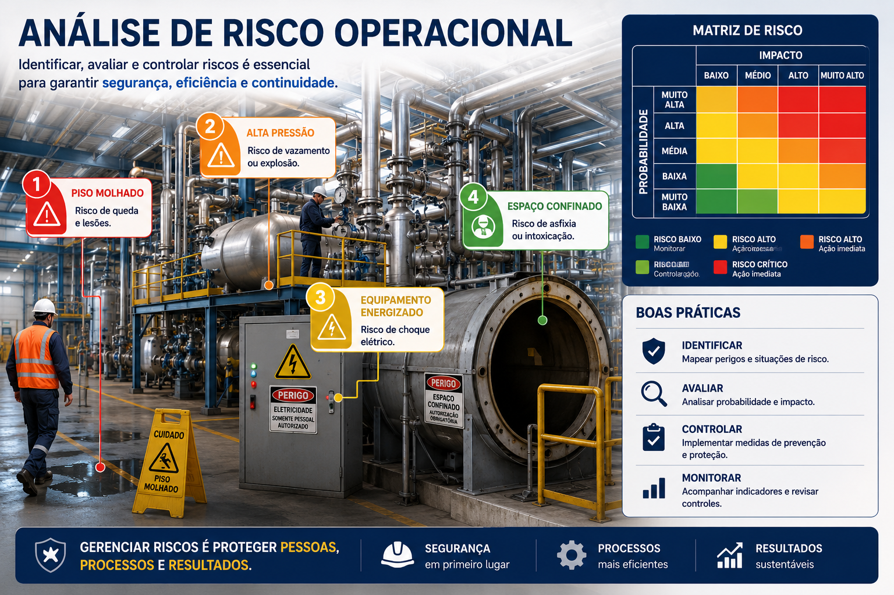

Duração
30 minutos
Nível
Básico
Área
Gestão
Tipo
Análise de riscos
O que é gestão de riscos?
Gestão de riscos é o processo de identificar, analisar e controlar situações que possam causar:
Análise de risco operacional
A imagem abaixo mostra um exemplo de análise de riscos em ambiente industrial, incluindo perigos, níveis de criticidade e matriz de risco.

Probabilidade x impacto
Um risco normalmente é analisado considerando dois fatores:
Probabilidade
Chance do problema acontecer.
Impacto
Gravidade das consequências.
Quanto maior a probabilidade e maior o impacto, maior será a criticidade do risco.
Controle e prevenção
A gestão de riscos não busca apenas identificar problemas, mas também prevenir ocorrências.
Identificar
Reconhecer perigos existentes na operação.
Avaliar
Entender probabilidade e impacto do risco.
Controlar
Aplicar medidas preventivas e corretivas.
Monitorar
Acompanhar continuamente os riscos da operação.
Exemplos de riscos operacionais
Pequenos riscos ignorados podem gerar grandes consequências.